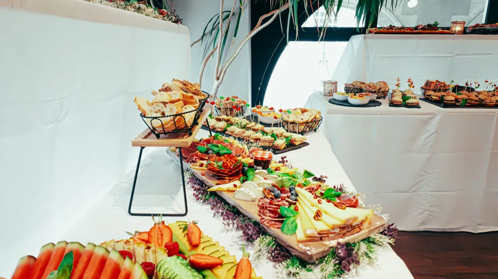
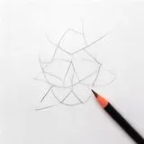

집들이 요리 메뉴 추천: 실패 없는 4단계 맞춤 식단 짜기
사진: Jonathan Borba / Pexels (무료 이미지, 출처 표기)
집들이 메뉴 선정의 기본 원칙: '이것'만 피하면 절반은 성공

손님 초대 날짜가 다가오는데 어떤 메뉴를 내놓아야 할지 막막한가요? 요리 초보라도 당황하지 않고 센스 있다는 찬사를 들을 수 있는 실전 메뉴 구성법을 정리했습니다. 가장 먼저 기억할 점은 '모든 요리를 불 위에서 조리하는 것'으로 채우면 안 된다는 사실입니다.
동시에 가스레인지나 인덕션을 써야 하는 메뉴가 많으면 주방은 아수라장이 되고 음식은 식어버립니다. 불을 쓰는 메인 요리 1~2개, 에어프라이어나 오븐을 쓰는 요리 1개, 그리고 불 없이 준비하는 콜드 디시(샐러드, 무쌈말이, 일식 회 등) 1~2개 비율로 구성하는 것이 가장 안정적입니다.
인원 및 콘셉트별 추천 메뉴 황금 조합
방문하는 손님의 연령대와 모임 성격에 따라 메뉴의 방향성을 정하면 메뉴 선정이 훨씬 쉬워집니다. 아래 표를 참고하여 우리 집에 올 손님들에게 가장 잘 맞는 조합을 선택해 보세요.
식품의약품안전처의 위생 가이드에 따르면, 여름철이나 실내 온도가 높은 환경에서 조리된 음식은 상온에 2시간 이상 방치할 경우 균이 증식할 우려가 있습니다. 따라서 한 번에 모든 음식을 다 깔아두기보다, 따뜻하게 먹어야 하는 전골이나 고기류는 손님이 도착한 직후 조리를 시작하는 동선으로 조절하는 것이 안전합니다.
당일 준비 시간을 절반으로 줄이는 요리 준비 4단계
집들이 당일 허둥대지 않으려면 체계적인 준비 순서가 필요합니다. 전날 할 수 있는 밑작업을 미리 해두는 것만으로도 당일 주방에서의 스트레스가 90% 이상 줄어듭니다.
- 게스트 취향 및 알레르기 파악: 못 먹는 식재료(오이, 갑각류, 견과류 등)나 선호하는 주류를 미리 가볍게 물어봅니다.
- 메뉴 확정 및 장보기 목록 작성: 겹치는 재료(예: 대파, 버섯, 양파 등)를 파악해 묶음으로 구매하면 예산을 크게 아낄 수 있습니다.
- 전날 밑작업 완료하기: 채소는 미리 씻어서 물기를 빼 밀폐용기에 담아두고, 고기류는 핏물을 빼거나 밑간 양념을 재워둡니다. 소스류도 전날 미리 섞어둡니다.
- 당일 최종 조리 및 플레이팅: 손님 도착 1시간 전에는 테이블 세팅을 마치고, 도착 20분 전부터 메인 요리를 가열하기 시작합니다.
시판 밀키트와 완제품을 현명하게 섞어 쓰는 비법
모든 음식을 소스부터 재료 손질까지 직접 하겠다는 욕심은 내려놓는 것이 좋습니다. 요즘 나오는 대기업 및 유명 맛집의 밀키트는 직접 만든 것 못지않은 훌륭한 퀄리티를 자랑합니다. 손이 가장 많이 가는 요리나 비주얼 담당 메뉴는 밀키트를 영리하게 활용하세요.
단, 밀키트를 그대로 내놓기보다 개인 소장용 예쁜 그릇에 옮겨 담고, 신선한 버섯이나 쑥갓, 통깨, 허브 등을 살짝 고명으로 얹어주면 손수 정성껏 대접한 느낌을 연출할 수 있습니다. 메인 하나는 밀키트로 해결하고, 간단한 샐러드나 핑거푸드만 직접 만드는 것이 몸과 마음을 지키면서 성공적인 집들이를 치르는 프로 호스트의 노하우입니다.
성공적인 집들이를 위한 요리 외 필수 체크리스트
- 실내 환기 및 향기 관리: 음식 냄새가 좁은 집에 가득 차면 답답할 수 있습니다. 손님이 오기 30분 전 환기를 시키고 은은한 디퓨저를 켜두세요.
- 음료와 주류용 얼음 준비: 생각보다 놓치기 쉬운 부분입니다. 얼음 틀을 가득 채워두거나 편의점 돌얼음을 미리 사두면 유용합니다.
- 개인 앞접시와 수저 세트 넉넉히 준비: 음식이 섞이지 않도록 개인 접시를 1인당 최소 2개 이상 쓸 수 있도록 여유 있게 배치합니다.
- 남은 음식 처리용 용기 확보: 손님들이 가고 난 뒤 남은 음식을 깔끔하게 정리할 지퍼백과 밀폐용기를 미리 주방 한편에 꺼내두면 뒷정리가 빨라집니다.
🔗 이 글도 함께 보면 좋아요: 직장인 다이어트 도시락 준비, 3단계 밀프렙 핵심 가이드
관련 추천 상품
이 포스팅은 쿠팡 파트너스 활동의 일환으로, 이에 따른 일정액의 수수료를 제공받습니다.
한눈에 보는 상품 목록

프레시지 밀푀유나베 밀키트
마이셰프 감바스 알 아히요
프레시지 블랙라벨 찹스테이크